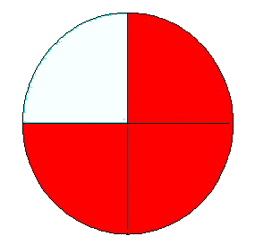

| Choisissez votre langue ! | Choose your language ! |
Fractions
Fractions
Définitions
Considérons avant tout des grandeurs, des objets que nous considérons comme 'divisibles', des objets suffisamment symétriques pour qu'il soit possible de les partager en deux, en trois, par exemple un cercle (tarte, camembert) ou un segment de droite pris comme unité de longueur. On définit alors la 'moitié' , le 'tiers ', le 'quart' de l'objet qui est la portion obtenue en coupant cet objet en 2, 3, 4 parties 'égales' (superposables). Les notations usuelles sont 1/2, 1/3, 1/4 pour ces portions (fractions). D'une façon générale si q désigne un entier naturel positif et si p est un autre entier naturel p /q représente la part de l'objet obtenue en coupant l'objet en q parties égales et en prenant p des parties obtenues.Traditionellement un tel couple se note linéairement p /q on utilise plutôt une notation étagée: \(\frac{p}{q}\)
- p s'appelle le 'numérateur' de la fraction
- q ≠ 0 s'appelle le 'dénominateur' de la fraction
Definitions
Let us first consider objects that we consider as 'divisible', objects that are sufficiently symmetrical so that it is possible to divide in two, in three, for example a circle (pie) or a line segment taken as a unit of length. We then define the 'half' , the 'third ', the 'quarter' of the object which is the portion obtained by cutting this object into 2, 3, 4 'equal' parts. The usual notations are 1/2, 1/3, 1/4 for these portions (fractions). Generally speaking if q denotes a positive natural number and if p is another natural number p/q represents the part of the object obtained in cutting the object into q equal parts and taking p from parts obtained.traditionally such a couple is noted linearly p /q we rather use a two levels syntax \(\frac{p}{q}\).
- p is called the 'numerator' of the fraction
- q ≠ 0 is called the 'denominator' of the fraction

Une telle fraction représente donc une partie du tout.
Que dire maintenant des fractions p/q où p ≥ q ?
Notons qu'on peut toujours faire une division euclidienne de p par q on obtient alors p=nq+m où m<q . La fraction généralisée p/q devra donc être comprise comme représentant un certain nombre d'objets entiers, soit n augmenté d'une fraction 'authentique' m/q.
Voici donc, en rouge une représentation de la fraction 7/4
Such a fraction therefore represents a part of the whole.
Now what about the fractions p/q where p ≥ q?
Note that we can always do a Euclidean division of p by q we then obtains p=nq+m where m<q . The generalized fraction p/q should so be understood as representing a number of whole objects, or n increased by an 'authentic' fraction m/q.
Here is, in red, a representation of the fraction 7/4
Remarque: dans les pays anglo-saxons il est très courant de séparer dans l'écriture la partie entière d'une fraction de sa partie fractionnaire pure.
Ainsi dans ces pays la fraction 7/2 se notera plus souvent 3½
Note: in Anglo-Saxon countries it is very common to separate in writing the whole part from a fraction of its pure fractional part.
Thus in these countries the fraction 7/2 will more often be noted 3½
|
Création Gilles Dubois - licence CC-BY-SA
Created by Gilles Dubois - licence CC-BY-SA
|
Septembre 2023
September 2023
|
Version mobile Jquery
Mobile Jquery version
|
|